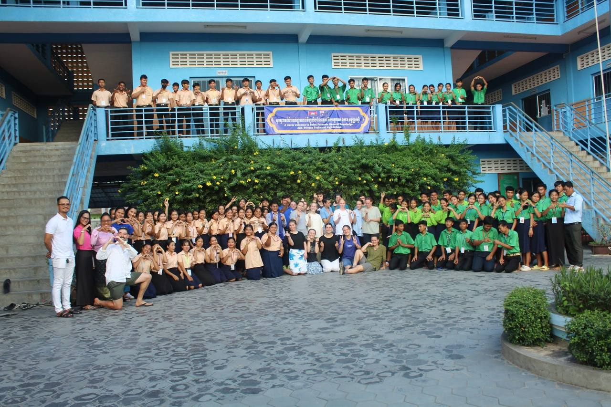
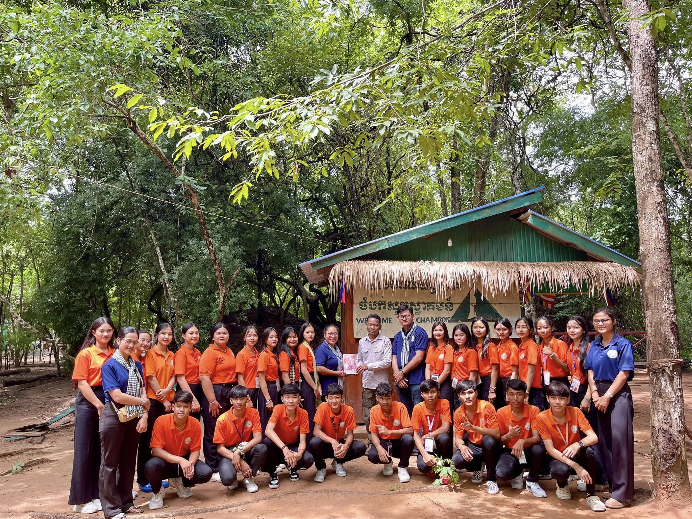
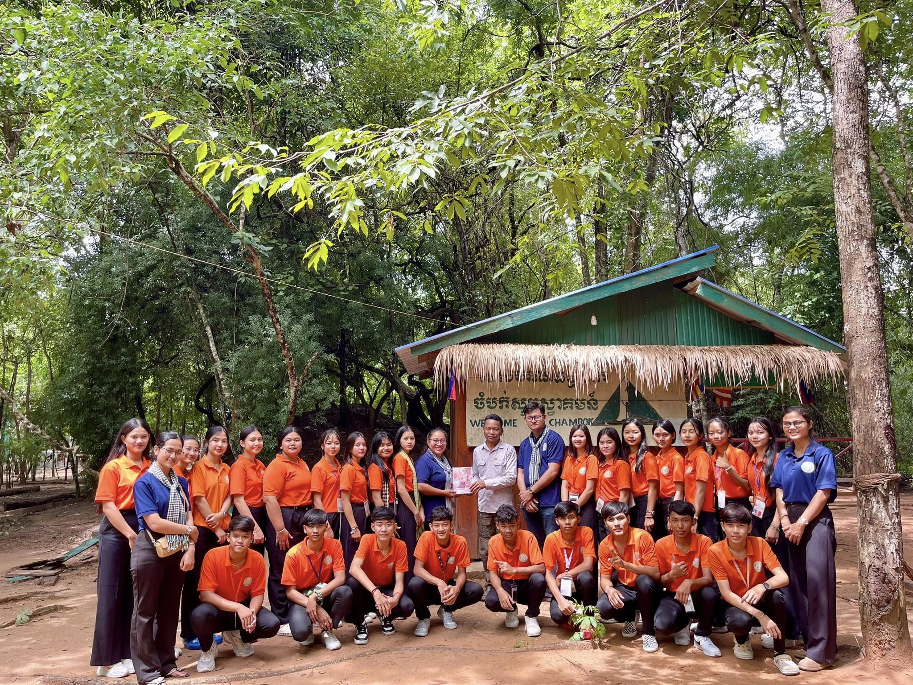

ក្នុងឆ្នាំ ២០០៣ ព្រះសហគមន៍កាតូលិកចំការទៀង ដែលមានលោកអភិបាល អូលីវីយេ ក្នុងនាមជាអ្នកទទួលខុសត្រូវ ហើយលោកជាប្រធានគណៈកម្មការអប់រំសិក្សាធិការព្រះសហគមន៍កាតូលិកភូមិភាគភ្នំពេញ។ ដោយសង្កេតឃើញភាពក្រីក្រលំបាក សិស្សបោះបង់ការសិក្សាច្រើន ដោយសារពុំមានលទ្ធភាពបន្តការសិក្សានៅភ្នំពេញ លោកអភិបាលមានគំនិតបង្កើតវិទ្យាល័យបច្ចេកទេស។ ប៉ុន្តែពេលនោះ ពុំមានមធ្យោបាយអាចដំណើរការទៅបាន។ លោកអភិបាលក៏សម្រេចចិត្តបង្កើតវិទ្យាល័យចំណេះទូទៅ និងបណ្តុះបណ្តាលវិជ្ជាជីវៈ សន្តហ្វ្រង់ស្វ័រ ដោយបន្ថែមកម្មវិធីសិក្សាជំនាញមួយចំនួនដូចជា កសិកម្ម លេខាធិការ និងតម្បាញសូត្រ។ ចាប់តាំងពីឆ្នាំ ២០០៣ រហូតដល់ឆ្នាំ ២០១៥ លោកអភិបាលបន្តចិញ្ចឹមចិត្តបង្កើតសាលាបច្ចេកទេស ក្នុងគោលបំណងឱ្យសិស្សក្រីក្រ និង សិស្សពុំមានសមត្ថភាពរៀនផ្នែកចំណេះទូទៅទទួលបានឱកាសសិក្សាផ្នែកអប់រំបច្ចេកទេសដើម្បីឱ្យពួកគេទទួលបាន ជំនាញយ៉ាងពិតប្រាកដដើម្បីឱ្យពួកគេមានលទ្ធភាព សមត្ថភាពកសាងជីវភាពរស់នៅ និងកាត់បន្ថយភាពក្រីក្រនៅតាមជនបទ។ ក្នុងឆ្នាំ២០១៥ ក្រសួងអប់រំយុវជន និងកីឡា បានធ្វើកំណែទម្រង់ដោយផ្តោតសំខាន់លើការបណ្តុះបណ្តាលផ្នែកអប់រំបច្ចេកទេស។ ដោយមើលឃើញឱកាសដ៏ល្អនេះ លោកអភិបាលអូលីវីយ៉េបានចាប់ផ្តើមបង្កើតគណៈកម្មការមួយដើម្បីធ្វើការសម្របសម្រួលសុំបង្កើតវិទ្យាល័យចំណេះទូទៅ និងបច្ចេកទេស ឯកជន សន្តហ្រ្វង់ស្វ័រនេះឡើង ហើយបានសម្រេចជាស្ថាពរក្នុងឆ្នាំ ២០១៥ តាមសារាចរណ៍លេខ ២៥១៩ អយកប្រក ចុះថ្ងៃទី ០២ ខែកញ្ញា ឆ្នាំ ២០១៥ ។

ការសិក្សាគ្រប់ជ្រុងជ្រោយអំពីការអនុវត្តកសិកម្ម ការដាំដុះដំណាំ ការចិញ្ចឹមសត្វ និងបច្ចេកទេសធ្វើកសិកម្មប្រកបដោយនិរន្តរភាព។
មុខវិជ្ជាប្រឡងឆមាស:ការប្រឡងគ្របដណ្តប់លើវិទ្យាសាស្ត្រដំណាំ ការគ្រប់គ្រងដី និងការចិញ្ចឹមសត្វជាមូលដ្ឋាន។
មុខវិជ្ជាប្រឡងបញ្ចប់:សិស្សត្រូវប្រឡងជំនាញជាក់លាក់ និងសរសេរកិច្ចការស្រាវជ្រាវ។


សិក្សាអំពីនីតិវិធីរដ្ឋបាល សេវាកម្មអតិថិជន ជំនាញទំនាក់ទំនង និងការគ្រប់គ្រងការិយាល័យ។
មុខវិជ្ជាប្រឡងឆមាស:ការប្រឡងរួមមាន រដ្ឋបាលការិយាល័យ ទំនាក់ទំនងអាជីវកម្ម និងកម្មវិធីកុំព្យូទ័រ។
មុខវិជ្ជាប្រឡងបញ្ចប់:សិស្សត្រូវប្រឡងជំនាញជាក់លាក់ និងសរសេរកិច្ចការស្រាវជ្រាវ។


នៅថ្ងៃអង្គារ ៩រោច ខែពិសាខ ឆ្នាំម្សាញ់ សប្តស័ក ព.ស. ២៥៦៩ ត្រូវនឹងថ្ងៃទី២០ ខែឧសភា ឆ្នាំ២០២៥។ ការចុះទស្សនកិច្ចសិក្សារបស់សិស្សឆ្នាំទី៣ ជាមួយលោកគ្រូ-អ្នកគ្រូ ដើម្បីស្វែងយល់អំពីមុខវិជ្ជាផ្សេងៗ ក៏ដូចជាចំណេះដឹងថី្មៗជាច្រើនបន្ថែមទៀតនៃវិទ្យាស្ថានបច្ចេកវិទ្យាកំពង់ស្ពឺ សម្រាប់ជួយបំភ្លឺផ្លូវរបស់ប្អូនៗនៅពេលអនាគត។ ២០.០៥.២០២៥ ➡️ (រៀនពិត អនុវត្តន៍ពិត បទពិសោធន៍ពិតៗ)


នាថ្ងៃសុក្រ ១១កើត ខែជេស្ឋ ឆ្នាំម្សាញ់ សប្តស័ក ព.ស.២៥៦៩ ត្រូវនឹងថ្ងៃទី០៦ ខែមិថុនា ឆ្នាំ២០២៥ ដំណើរទស្សនកិច្ចសិក្សារយៈពេល១ថ្ងៃ របស់សិស្សានុសិស្សជំនាញការិយាល័យជួរមុខ ឆ្នាំទី២ ជំនាន់ទី៦ នៃវិទ្យាល័យចំណេះទូទៅនិងបច្ចេកទេស ឯកជន សន្តហ្រ្វង់ស័្វររួមមាន៖
1. ក្រុមហ៊ុន Thalias Hospitality ទស្សនៈកិច្ចសិក្សាទៅកាន់ភោជនីយដ្ឋាន Topaz ទាំងពីរទីតាំង
2. Topaz (ផ្លូវនរោត្តម)ស្ថិតនៅលើផ្លូវលេខ ១៦២ ផ្លូវនរោត្តម (Preah Norodom Blvd), ភ្នំពេញ
3. Topaz (The Commune – ទួលគោក) ស្ថិតនៅជាន់ទី១ ក្នុងអាគារ The Commune, ផ្លូវលេខ ៣៤៧, សង្កាត់ទួលគោក, ភ្នំពេញ
4. ក្រុមហ៊ុន Almond Hospitality ទស្សនៈកិច្ចសិក្សានៅក្នុង Yi Sang The Garden ស្ថិតលើផ្លូវលេខ 337, សង្កាត់បឹងកុក 1, ខ័ណ្ឌទួលគោក, ភ្នំពេញ
➡️ គោលបំណងនៃដំណើរទស្សនកិច្ចសិក្សាមានដូចជា៖
1. បង្កើនការយល់ដឹងបន្ថែមដល់សិស្សានុសិស្សលើដំណើរការប្រតិបត្តិការ ផ្នែការិយាល័យជួរមុខ ផ្នែកគេហកិច្ច និងផ្នែកសេវាកម្មអាហារ និងភេសជ្ជៈ ដើម្បីជារូបភាពក្នុងការពង្រឹងនូវពុទ្ធិបន្ថែមផ្សារភ្ជាប់ការសិក្សាទ្រឹស្តី និងការអនុវត្តផ្ទាល់។
2. បង្កើនទំនាក់ទំនងល្អរវាងស្ថាប័នទេសចរណ៍ និងក្រុមហ៊ុនបដិសណ្ឋារកិច្ច ជាមួយនឹងវិទ្យាល័យចំណេះទូទៅ និងបច្ចេកទេសឯកជន សន្តហ្វ្រង់ស្វ័រ និងជាការបង្កើតកិច្ចសហប្រតិបត្តិការល្អជាមួយគ្នាទៅវិញទៅមក និងឱកាសការងារសម្រាប់សិស្សានុសិស្សដែលសិក្សាលើជំនាញបច្ចេកទេស។


នាថ្ងៃចន្ទ ១២កើត ខែអាសាឍ ឆ្នាំម្សាញ់ សប្តស័ក ព.ស.២៥៦៩ ត្រូវនឹងថ្ងៃទី០៧ ខែកក្កដា ឆ្នាំ២០២៥ ដំណើរទស្សនកិច្ចសិក្សារយៈពេល១ថ្ងៃ របស់សិស្សានុសិស្សជំនាញការិយាល័យជួរមុខ ឆ្នាំទី៣ ជំនាន់ទី៥ នៃវិទ្យាល័យចំណេះទូទៅនិងបច្ចេកទេស ឯកជន សន្តហ្រ្វង់ស័្វររួមមាន៖
1. សហគមន៍អេកូទេសចរណ៍ចំបក់
2. ឧទ្យានជាតិ ព្រះសុរាម្រិតកុសមៈ គិរីរម្យ
➡️ គោលបំណងនៃដំណើរទស្សនកិច្ចសិក្សាមានដូចជា៖
1. បង្កើនការយល់ដឹងបន្ថែមដល់សិស្សានុសិស្សស្វែងយល់ពីការគ្រប់គ្រងក្នុងសហគមន៍អេកូទេសចរណ៍ចំបក់ដើម្បីទទួលបានបទពិសោធន៍ថ្មីៗពាក់ព័ន្ធទៅនឹងការអភិរក្សលើធនធានធម្មជាតិ និងការចូលរួមរបស់ប្រជាជនដែលជាសមាជិកក្នុងសកម្មភាពអភិវឌ្ឍន៍សហគមន៍ទេសចរណ៍។
2. បង្កើនទំនាក់ទំនងល្អរវាងស្ថាប័នទេសចរណ៍ និងក្រុមហ៊ុនបដិសណ្ឋារកិច្ច ជាមួយនឹងវិទ្យាល័យចំណេះទូទៅ និងបច្ចេកទេសឯកជន សន្តហ្វ្រង់ស្វ័រ និងជាការបង្កើតកិច្ចសហប្រតិបត្តិការល្អជាមួយគ្នាទៅវិញទៅមក និងឱកាសការងារសម្រាប់សិស្សានុសិស្សដែលសិក្សាលើជំនាញបច្ចេកទេស។
 


ផ្លូវជាតិលេខ៣ ភូមិអង្គរគគីរ ឃុំតាភេម ស្រុកត្រាំកក់ ខេត្តតាកែវ ខាងជើងផ្សារអង្គតាសោម ៣គីឡូម៉ែត្រ
មើលផែនទីអ៊ីម៉ែល: saintfrancois.enquiry@gmail.com
លេខទូរស័ព្ទ: 067 563 110